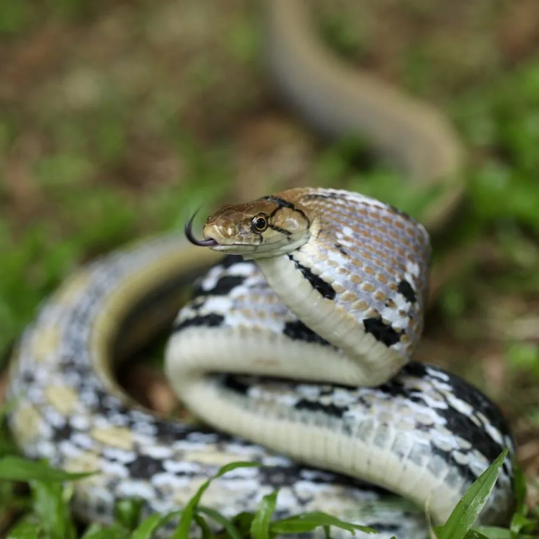

爬行动物 · 动物界
三索锦蛇 Coelognathus radiatus

中国南方常见的无毒游蛇，头侧有放射状黑纹，体色黄褐，俗称三索蛇，善于攀爬，常在农田和灌丛中捕食鼠类。
- 分类
- 门脊索动物门纲爬行纲目有鳞目科游蛇科属三索蛇属
- 栖息环境
- 农田、灌丛、林缘、竹丛与村落附近的草丛
- 地理分布
- 中国南方多省区及南亚、东南亚地区
- 保护级别
- IUCN 无危（LC）；中国未列入国家重点保护名录
物种志
三索锦蛇体长 1.2–1.8 米，身体细长，头部略呈长椭圆形，眼后有几条黑色的放射状条纹，头顶有“三索”状纵线；背面呈黄褐、橄榄褐或灰褐色，体侧有黑色纵纹与黄点，腹面淡黄。它的鳞片光滑，攀爬能力强，受惊时会鼓胀颈部并发出嘶声。
它分布于中国南方以及南亚、东南亚地区，栖息于农田、灌丛、林缘与村落附近，多在白天活动，捕食鼠类、鸟类、蛙类和蜥蜴，对控制农田鼠害有益。每年 4–7 月繁殖，雌蛇产卵 5–12 枚，孵化期约 60–75 天。它性情较温和，无毒，但因体型大、花纹醒目而常被误捕；目前未被列入国家重点保护名录，属于常见的农田益蛇。
形态与习性
- 食性鼠类、鸟类、蛙类和蜥蜴
- 体长1.2–1.8 m
- 体重约 0.5–1 kg
- 寿命约 10–15 年
- 繁殖卵生，每窝 5–12 枚，孵化 60–75 天
- 活动节律昼行性，善攀爬
- 毒性无毒，受惊时鼓颈并发出嘶声
趣味知识
- 三索锦蛇眼后有放射状黑色条纹，头顶还有三条纵向的“索”纹。
- 它是无毒的农田益蛇，主食鼠类，对控制鼠害有帮助。
- 受惊时它会鼓起颈部、发出嘶嘶声，试图吓退对方。